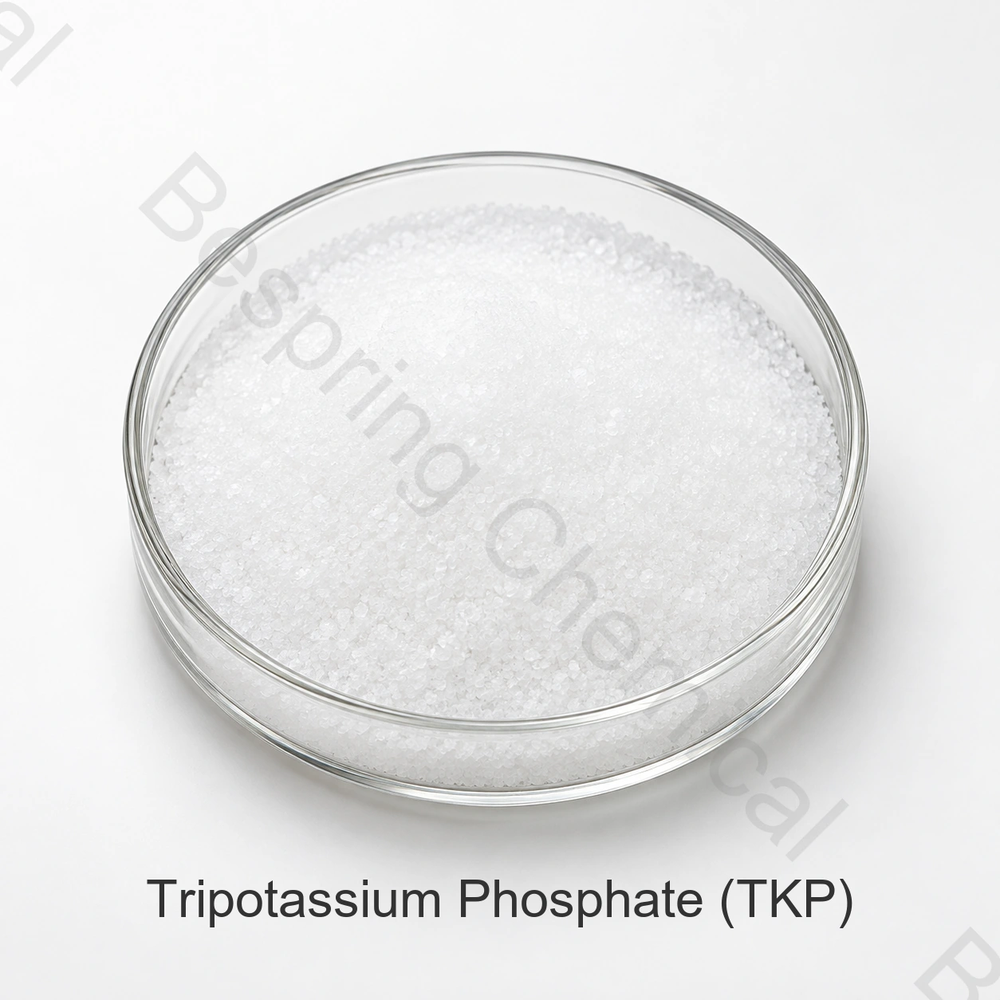

Buffering and sequestration
JECFA lists buffer and sequestrant functions. TKP may be evaluated where pH and mineral interactions influence stability or process performance.
- Alkaline buffering
- Metal-ion sequestration
- Process-pH adjustment
Food grade phosphate · Potassium salt · INS 340(iii)
Tripotassium phosphate is a strongly alkaline potassium orthophosphate used in selected food systems for buffering, emulsion stabilization, sequestration, emulsification and meat binding.

Product image · confirm grade and packaging when ordering
Include the hydrate form, food application, target specification, quantity, destination and documents.
Reference assayK3PO4 content ≥97.0%
Standard packing25 kg bag
Container loadingReference: 22 MT / 20' FCL
QualificationCOA and applicable certificates on request
Product overview
Food grade tripotassium phosphate (TKP), also called tribasic potassium phosphate or tripotassium orthophosphate, has the anhydrous formula K3PO4, CAS number 7778-53-2 and INS number 340(iii).
JECFA recognizes anhydrous and hydrated forms. The commercial reference specification lists at least 97.0% K3PO4; buyers should specify the hydrate basis because moisture-related limits and delivered assay can differ.
Functional roles
TKP is an alkaline phosphate. Its suitability depends on the exact form, dosage, complete formulation, process and applicable food-category rules.
JECFA lists buffer and sequestrant functions. TKP may be evaluated where pH and mineral interactions influence stability or process performance.
Evaluate emulsification, nutrient or flavor contribution and meat-binding targets in the actual food; JECFA identifies emulsion stabilization.
Food application screening
Select applications by the intended process, destination-market rules and measurable acceptance criteria.
Evaluate binding, emulsion stability, yield, texture, pH and flavor in the actual meat formulation.
Test fat-water stability, protein response and process tolerance at the proposed addition level.
Confirm solution pH, buffering response and compatibility; TKP is more alkaline than MKP or DKP.
Assess sequestration in the complete system where metal ions affect stability, appearance or processing.
Where nutrient or flavor contribution is targeted, verify sensory effects, nutrient calculations, labeling and legal use.
Define target outcomes, control formulation, hydrate form, dosage and test methods before plant-scale use.
Commercial specifications
These commercial reference limits are separate from batch COA results and regulatory requirements. Agree the hydration form, methods and acceptance criteria in the signed specification.
Swipe or use the keyboard to read all columns
| Test item | Specification |
|---|---|
| Tripotassium phosphate (K3PO4) content | ≥97.0% |
| Arsenic (As) | ≤0.0003% |
| Fluoride (F) | ≤0.001% |
| Heavy metals (as Pb) | ≤0.0015% |
| Lead (Pb) | ≤0.0002% |
| Water-insoluble matter | ≤0.2% |
| Loss on ignition (hydrate and method unspecified) | ≤8–20% |
Hydrate and method check: The loss-on-ignition reference “≤8–20%” combines a maximum sign with a range, without identifying the hydrate. It is not a complete acceptance criterion. Define the exact form, comparator, limit, temperature and duration in the signed specification before batch acceptance.
Qualification support
Request the current specification/TDS, SDS, hydrate declaration, test methods and representative or batch COA.
Request applicable HACCP, Kosher, Halal and ISO documents and verify the product, site, scope, issuer and validity.
Review the FAO/WHO JECFA tripotassium phosphate monograph for identity, forms and functional-use context.
Storage and handling
Buyer questions
No. TKP is tripotassium phosphate, K3PO4. KTPP is potassium tripolyphosphate, K5P3O10, and TKPP is tetrapotassium pyrophosphate, K4P2O7. Each requires a separate specification.
It is evaluated as a buffer, sequestrant, emulsion stabilizer, emulsifier and meat binder in selected food systems. Nutrient and flavor contributions require separate formulation and regulatory evaluation.
Anhydrous and hydrated TKP have different water content and loss-on-ignition behavior. State the required form and analytical basis in the purchase specification.
The reference is 25 kg per bag, 22 metric tons per 20-foot container and a 500 kg minimum order. Confirm current liner, pallet and loading details.
Provide the hydrate form, food application, target specification, quantity, packing, destination, required documents and delivery date.
Related potassium phosphates
INS 340(ii), a less alkaline potassium orthophosphate for selected food systems.
INS 340(i), used in selected buffering, culture and fermentation applications.
A condensed phosphate with different composition, functionality and specification.
Specification-led sourcing
Share the details needed to review technical fit, documents and delivery.
Tell us your grade and destination market so we can confirm which documents are available for your order.
An external reference is not a batch certificate or a Bespring product specification.